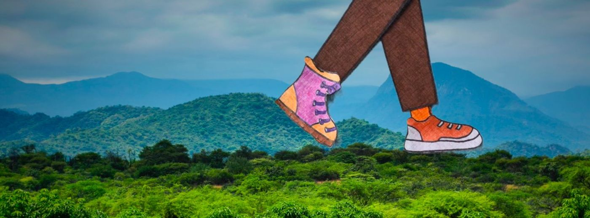

Perú · México · Censurados
Stop Motion, Stop Walls
Con la técnica del stop motion, niñas, niños y adolescentes reflexionan sobre la migración, las fronteras y las barreras visibles e invisibles, a través de la creación colectiva.

Cortos de los talleres
Hechos foto a foto
Papel, lápices de colores y una cámara: cada corto lo crean juntos las y los participantes, del guion a la animación.